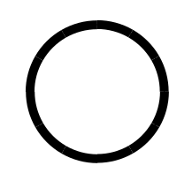
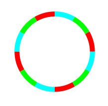
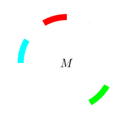
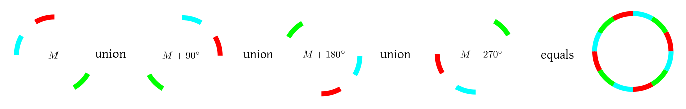

If we keep on tossing a coin again and again, we are bound to get head sometime or other (assuming that $P(H)>0$).
A proof of this may be given like this:
Let $A_n$ be the event that the first $n$ tosses have all resulted in heads. Let
$A$ be the event that we never get a head. Then clearly $A_n\searrow A$. So by
continuity of probability we must have $P(A_n)\rightarrow P(A).$ Now $P(A_n) = \left(\frac 12\right)^n \rightarrow
0.$ Hence $P(A)=0.$ Hence $P(A^c)=1,$ i.e., we are bound to get a head some time or other.
However, we must understand that in order to write $A_n\searrow A$, we need all the $A_n$'s and $A$ to be
subsets of some common $\Omega.$ Each element of this $\Omega$ is an infinite sequence of heads and tails.
If you feel uncomfortable with sets of ininite sequences, just think of $\Omega$ as the set of all functions from
${\mathbb N}$ to $\{H,T\}.$
Proof:
Let, possible, $\Omega$ be countable. Let $\omega_1,\omega_2,...$ be an enumeration of $\Omega.$ Here
is a typical example:
$\omega_1 = $ H T H T T T H T H ...
$\omega_2 = $ H H T H H T H T H ...
$\omega_3 = $ T T H T T T H H T ...
$\omega_4 = $ H T T T H T T H H ...
$\omega_5 = $ H H H H T H T H T ...
$\omega_6 = $ T H T T T H H H T ...
...
Now define $\omega$ as the sequence that flips the diagonal entries (shown in red above).
In our example,
$\omega=$ T T T H H T ...
Clearly, this $\omega$ is distinct rom all the $\omega_i$'s (since the $i$-th entry of $\omega$ is
different from that of $\omega_i$).
But this contradicts the assumption that the $\omega_i$'s constitute an enumeration of $\Omega.$
[QED]
So far in our course, we were working with countable (finite/infinite) $\Omega.$ For these we considered a probability
to be a mapping from ${\mathcal P}(\Omega)$ to $[0,1].$ In other words, we could defined $P(A)$ for every
$A\subseteq\Omega.$ Unfortunately this may fail when $\Omega$ is uncountable. Here we may have "bad" subsets of $\Omega$
for whcih probability cannot be defined.
We shall discuss such an example next.
Let $\Omega$ be the following circle (only the circumference, not the
inside). Let the circumference have length 1.

A circle
If I pick a point "at random" from this circle, what is the
chance that it lands in the upper semicircle? The obvious answer
is $\frac 12.$ What is the chance that it would land in any
given quadrant? The obvious answer this time is $\frac 14.$
In fact, for any arc, the probability equals the length of the arc.
Also, suppose that $A$ is some subset of the
circle. Let us denote by $A+\theta$ the subset obtained by
rotating $A$ by an angle $\theta.$ Which subset has the
larger probability, $A$ or $A+\theta?$ Since we are
picking the point "at random" without any bias for any particular
direction, hence both $A$ and $A+\theta$ should have
the same probability.
It might come as a surprise
that there is no probability function $P$ from the power set
of $\Omega$ to ${\mathbb R}$ that satisfies these two
conditions simultaneously, i.e.,
for any arc $A$ we must have $P(A)=length(A).$
for any $A\subseteq\Omega$ and for any $\theta$ we must
have $P(A) = P(A+\theta).$
Thus, we are claiming that we cannot have a function $P$
definied on the entire power set of $\Omega$ that satisfies
the three probability axioms as well as these two extra conditions.
We shall provide a quick proof of
this here by contradiction. Let, if posible, there be such a
function $P.$ We shall demonstrate a "bad" set $M$ for
which $P(M)$ cannot be defined, contradicting the assumption
that $P$ is defined for all subsets of $\Omega.$
So in this scenario, we have
to leave out "bad" sets like this from $\ev.$ However,
all subsets that we shall ever need for practical pursposes are
still in $\ev.$ That is why, this technical point may safely
be ignored during a first course on probability.
Now for the proof. Let's warm up first.
Imagine the circle split up into
12 equal parts like the face of the clock.

Split up into 12 arcs
We have grouped the arcs into 3 different groups of size 4 each
(shown by the colours red, green and blue). The grouping is done
like this: Give any colour to any arc to start with. Then start
counting clockwise and use the
same colour to every 3rd arc. Then pick an uncoloured arc and
proceed similarly with another colour, and so on. Notice that the
parts of the different colours are all identical in shape and
size. One is just a rotated version of another. So the total
length of all the parts must be the same.

One arc of each colour
Now pick any one arc of each colour. This gives you a set. Call
it $M.$ Rotate $M$
by $90^\circ$ clockwise. The new set is $M+90^\circ.$
Then, notice that $M,
M+90^\circ, M+180^\circ$ and $M+270^\circ$ are all disjoint and build up
the entire circle.

Partitioning the circle
Well, that's all the warm up we need! Now for the actual thing.
We again start with the circle, whose
circumference is 1. Also, for two points $x,y\in
S$, we shall denote the (shorter) arc length between them
by $|xy|.$ This will always be in $[0,1/2].$
Pick any point on the circle, colour
it red. Also mark all points that are at a rational distance from
this point with the same colour. Now pick a point that has not
been coloured. Colour it green, and do the same thing again: mark
all points at a rational distance from it with green. Continue
like this until all the points are coloured. Of course, this will
take infinite amount of time. What we mean mathematically, is
that for each point $x\in S$ we define
$$
A_x = \{p\in S~:~ |px|\in{\mathbb Q}\}.
$$
Note the following points:
If $y\in A_x$ then $x\in A_y.$ So all
the $A_x$'s are not distinct. For example, if $x,y$
are diametrically opposite each other, then $A_x=A_y.$
Each $A_x$ is countable, since there are only countably
many rationals.
There are uncountably many distinct $A_x$'s (since
total number of points on the circle is uncountable).
Now pick exactly one point from each distinct $A_x.$ Call the set
of all these picked points $M.$
This is a troublesome set. I claim that you cannot define its
probability $P(M).$
For any rational number $r\in [0,1)$ we denote
by $M+r$ the set $M$ rotated clockwise by distance $r.$
Then note that
If $r\neq s$ are two rational points in $[0,1)$
then $M+r$ and $M+s$ are disjoint.
Let $\{r_1,r_2,...\}$ be a listing all rationals
in $[0,1).$
Then
$$
\cup_{i=1}^\infty (M+r_i)
$$
equals the entire circle.
Now, let's say that $M$ has $P(M)=\ell.$
Clearly, $\forall r\in[0,1)$ we must have $P(M+r)=\ell,$
as well.
Now, if $\ell = 0$ then the second
condition above implies that $P(\Omega)$
is $0+0+\cdots = 0,$ which is wrong, since length
of $P(\Omega)$ must be 1.
If $\ell>0,$ then $P(\Omega)$ becomes $\ell+\ell+\cdots =
\infty,$ again a contradiction!
This completes the proof
But as you can see, such "bad" sets are pretty difficult to come
across. So ignoring them will never cause any problem during our
course.
Still, to keep our discussion general, we need to modify the defintion of probability slightly.
Hence we should learn the following terminology.
The modification will consist of an explicit specification of the "good" sets. In other words,
instead of taking $P:{\mathcal P}(\Omega)\rightarrow[0,1],$ we shall now take $P:{\mathcal
A}\rightarrow[0,1],$ where ${\mathcal F}\subseteq{\mathcal P}(\Omega)$ is the collection of all the
"good" subsets of $\Omega.$ What properties should these "good" subsets have? Well, since
we are not going to manipulate the events using set theory, ${\mathcal F}$ should naturally be closed under the set
operations: union, intersection and complementation. Since we want to use axiom 3, we actually need ${\mathcal F}$
be closed under countable unions (and hence countable intersections, by de Morgan).
EXAMPLE 1: For any non-empty $\Omega$ we have the following two $\sigma$-algbras:
$\{\phi,\Omega\}$ and ${\mathcal P}(\Omega).$ In all our examples with countable
$\Omega$, we were using the latter. ■
EXERCISE 1: Show that any $\sigma$-algebra over $\Omega$ must contain $\phi$ and $\Omega.$
The elements of ${\mathcal F}$ are called events.
Also, we want ${\mathcal F}$
to contain all the subsets that we care about in a given problem. So it is only naturall that we choose ${\mathcal F}$
differently for different problems. There are two approaches: In the first approach, we
characterise the "bad" sets and eliminate them from ${\mathcal P}(\Omega).$ In the other approach (the more popular
one) we list all the sets that we want to work with and consider the smallest $\sigma$-algebra containing them.
EXAMPLE 2: Find the smallest $\sigma$-algebra over $\Omega=\{1,2,3\}$ that contains $\{1,2\}.$ ■
In many problems we work with $\Omega={\mathbb R},$ the real line. Then it is common to include all open sets
in our collection of "good" sets. So the smallest $\sigma$-algebra containing them is a very popular $\sigma$-algebra.
It is called the Borel $\sigma$-algebra.
The problem of "good" and "bad" sets comes up not just in probability theory, but whenever you want to measure the size of
a set. For instance, the circle example could as well be posed in terms of length of a set instead of its probability.
Any way to "measure the size of a set" must follow the axioms that we stated for probability (except the $P(\Omega)=1$).
As you may easily see, "length", "area", "mass", "volume", "cardinality" (for finite sets) are all examples of measures.
Comments
To post an anonymous comment, click on the "Name" field. This
will bring up an option saying "I'd rather post as a guest."